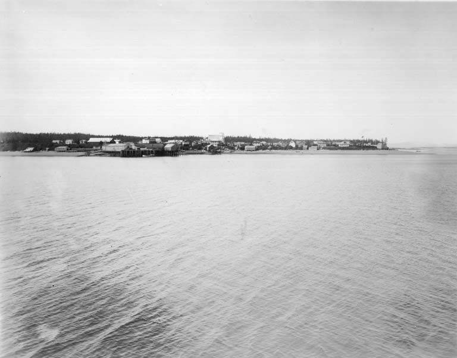

The directory/Metlakatla Indian Community, Annette Island Reserve

Metlakatla, Alaska, from the water, circa 1914Asahel Curtis, circa 1914; University of Washington Special Collections, CURTIS 1924, via Wikimedia Commons · Public domain
Named Alaska Native tribal community / government · Added to the original list
Metlakatla Indian Community, Annette Island Reserve
An introduction to the Alaska Metlakatla Indian Community through its own planning and mission statements and the Haayk Foundation’s Tsimshian and Sm’algyax language work.
See each region’s evidence for historical or present-day scope.
Homeland / region
Alaska
Research depth
Source guide
Source collection
4 annotated resources · 3 Indigenous-led
Inspected sources
4 substantive works · selected content reviewed
Initial adequacy
Still unfinished
Source review
November 2, 2026
Names & relationshipsAn individually named Alaska Native tribal-community/government route, retained separately from broader people and language collections. This identification-only check does not establish ethnicity, constituent peoples, descent or membership from the name; fuller relationships and history remain queued.
A source guide for a deeper dive.This entry provides a brief orientation and an organized reading path. A comprehensive deep dive has not yet been completed. Follow the annotated sources and distinguish primary community accounts from outside reference material.
Still unfinished
A bounded actual-content starting path and specifically scoped credited picture are available. Fuller history, source comparison and community review remain open; quantity does not establish completion.
Assessment recorded November 2, 2026. This is separate from research completion and community review.
A fuller community-directed founding and migration history remains needed.
Only selected parts of the 75-page plan were reviewed; maps, legal boundary conclusions and inventory calculations were excluded.
Language-program goals are not treated as evaluated outcomes or as proof of fluency for all residents.
Backdrop photographs & credits
These photographs have individual, documented connections to this entry. Their captions and source records define the people, place, object, and period shown; no one photograph represents every community within a broader label.
Metlakatla, Alaska, from the water, circa 1914 Asahel Curtis, circa 1914; University of Washington Special Collections, CURTIS 1924, via Wikimedia Commons · Public domain
A historical view of the Alaska community, with place explicitly identified in the file record and verso description. It is not a present-day community portrait. Creator Asahel Curtis, approximate date, University of Washington collection/accession and exact file-page public-domain terms read. Complete 768×601 JPEG viewed; this is both the normally offered unscaled preview and stored Commons file. No larger version was inferred; no standalone artwork, ceremonies, graves or identifiable people visible. Saved byte-for-byte without resizing, cropping, recompression or retouching. Card and opened-page assets are the same unchanged file.
Image, association, and reuse record reviewed 2026-11-02.
Full photographs are displayed proportionally above. A translucent background copy may be cropped by the viewport; it does not replace the complete image or its record.
The visual treatment does not change the research status, evidence, or remaining gaps recorded in this profile.
Start reading here
Start with Metlakatla Indian Community’s mission and the Haayk Foundation’s account of language and cultural continuity. Then read the selected introduction and priorities in MIC’s 2024 climate plan. This guide concerns Metlakatla in Alaska and its particular Tsimshian history; the separate Metlakatla community in British Columbia is not substituted for it. Read source annotations for selected pages, dates, perspective and access limits. This is not a complete history or community endorsement.
Read the state orientation narrowly for place and the diversity of tribal affiliations.
These are selected starting points. The full annotated collection, source perspectives, inspection limits and remaining research questions follow below. A starting guide is not an exhaustive history or community endorsement.
01
Building a community in Alaska
MIC’s 2024 planning document explains that Tsimshian people migrated from British Columbia before the Annette Islands Reserve was established in 1891. The Haayk Foundation’s own inspiration statement remembers the founders’ cooperation in creating a new Ts’msyen community in Alaska. These accounts make the Alaska community’s particular history visible; they do not turn all Tsimshian communities into one government.
The Metlakatla-based Haayk Foundation identifies producing fluent Sm’algyax speakers and creating learning materials as central goals. Its account describes language classes and cultural and educational activities, drawing inspiration from earlier generations. This is a local Tsimshian language context, distinct from the Tlingit contexts of several neighboring Southeast Alaska guides. The state’s Metlakatla orientation also notes residents with diverse tribal affiliations; language, residence and tribal citizenship should not be treated as interchangeable.
MIC’s mission connects self-governance and heritage with care for land and water for future generations. Its April 2024 climate plan turns those priorities toward proposed measures for energy systems, buildings, waste management, forests, wetlands and coasts. The plan explains that its team drew on earlier community plans and planning records. These are documented priorities and proposed actions, not evidence that every project has been completed or that projected benefits have occurred.
A fuller community-directed founding and migration history remains needed.
Only selected parts of the 75-page plan were reviewed; maps, legal boundary conclusions and inventory calculations were excluded.
Language-program goals are not treated as evaluated outcomes or as proof of fluency for all residents.
Follow the reading path
Sources & further reading
Open any title to read the original source. Annotations explain what each link can help you explore.
No Indigenous-led source is identified in this entry yet. This is a gap in this collection, and does not imply an absence of community knowledge or organization.
Community-authored environmental planning documentMetlakatla Indian Community; public copy hosted by U.S. EPASource 1
A substantial community planning source connecting a brief historical account with priorities for energy, facilities, waste and ecosystems. Proposed measures are not presented as completed work or proof of outcomes.
Inspection: Content reviewed for the stated scope
Scope: Title/credits; executive summary and table on printed pages 11–12; introduction on page 13; selected text of planning background/scope/process on pages 17–19. Pages 11–13 rendered and viewed. Boundaries, acreage, legal-authority conclusions, detailed inventory calculations, infrastructure maps and resource locations are excluded from the guide.
Review recorded: November 2, 2026
Access note: Public EPA PDF downloaded once successfully. Selected pages extracted with pypdf; complete delivered renders of printed pages 11–13 inspected. This is selected-page review, not review of all 75 pages.
Publication: Undated; footer copyright 2021 is not treated as publication date
A direct local cultural-organization account of its language-learning mission and the inspiration it draws from the founders of the Alaska community. This supplies Metlakatla-specific Tsimshian and Sm’algyax context.
Inspection: Content reviewed for the stated scope
Scope: Mission, funding/activities paragraph, and Our Inspiration paragraphs. Board/adviser listings, photographs, artwork and linked learning materials were not used.
Review recorded: November 2, 2026
Access note: Public body readable through the web reader; only the stated selected body was reviewed.
The community’s own statement joins self-governance and cultural continuity with care for land and water for future generations. It provides a concise introduction to the priorities that organize this reading guide.
Inspection: Content reviewed for the stated scope
Scope: Mission paragraphs and Preserving Our Climate & Resources paragraph. Current energy/emergency links and departmental details not reviewed.
Review recorded: November 2, 2026
Access note: Public body readable through the web reader; only the stated selected body was reviewed.
A state orientation that identifies Metlakatla’s Tsimshian setting while explicitly noting residents with other tribal affiliations. The guide does not infer that all residents or tribal citizens share one ancestry.
Inspection: Content reviewed for the stated scope
Scope: First community paragraph, limited to named place, Tsimshian context and diversity statement. Jurisdiction, population, acreage, harvest list and travel schedules omitted.
Review recorded: November 2, 2026
Access note: Public body readable through the web reader; only the stated selected body was reviewed.